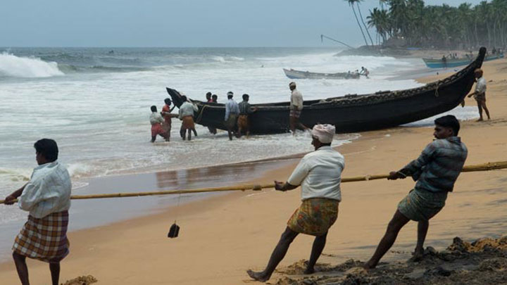
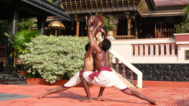
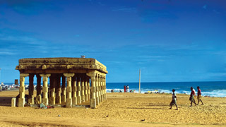

The southern tip of God’s Own Country is home to the administrative and cultural hub of the State, Thiruvananthapuram. From a landscape naturally endowed with some of the most picturesque visuals possible along with culturally relevant holy sites that have thrived for more than a thousand years, this area has something for everyone. Young and old alike, all can experience their own slice of Kerala here, tailor-made to their individual preference. Listed below are some of the most prominent places of interest in the State capital.
 Akkulam Tourist Village
Akkulam Tourist Village |
 Padmanabha swami Temple Padmanabha swami Temple |
Valiathura Beach, |
 Zoological garden
Zoological garden |
Martial arts school |
Valiathura Beach, |